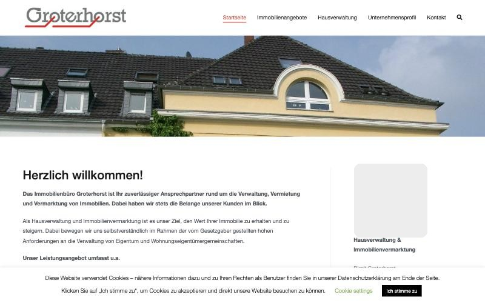
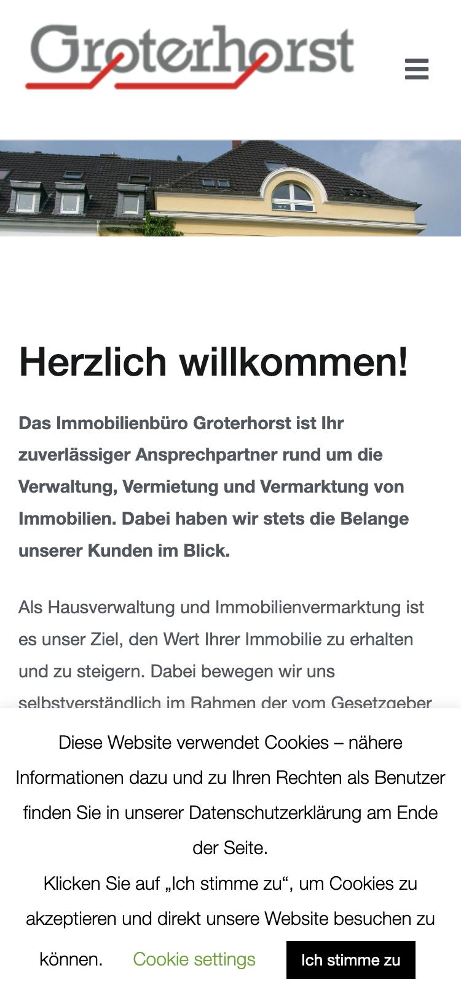

Redesign
Hausverwaltung Groterhorst
Ein Redesign aus Eigeninitiative: die Website einer kleinen Hausverwaltung in Geldern. Aus einer Standard-Vorlage wird eine ruhige Seite, die auf dem Handy beginnt. Mieter:innen finden sofort Hilfe. Eigentümer:innen fassen Vertrauen.
Das Problem
Birgit Groterhorst verwaltet als Einzelunternehmerin Häuser und Eigentümergemeinschaften in Geldern. Ihre Website sieht aus wie eine WordPress-Standardvorlage. Ich habe alle fünf Seiten durchgesehen. Der Inhalt stimmt. Die Form nicht.


- Navigation: Ein Hamburger-Menü, sogar am Desktop. Die Unterseiten sind schwer zu finden.
- Bilder: Ein einziges Dachfoto auf allen fünf Seiten. Die Inhaberin taucht nur klein am Rand auf.
- Inhalt: Die Leistungsliste steht zweimal da, mit 9 und mit 16 Punkten. Mal sagt die Seite „wir“, mal „ich“.
- Vertrauen: Keine Zahlen, keine Stimmen, keine sichtbare Qualifikation.
- Mieter-Service: Keine Möglichkeit, einen Schaden zu melden. Keine Fragen und Antworten, keine Notfall-Info.
- Technik und Look: Kein Farb- und kein Schriftsystem. Ein Fremdkörper-Widget für die Angebote. Und ein Cookie-Banner, der nicht mehr weggeht.
Zielgruppen
Eine Hausverwaltung hat mit Menschen zu tun, die ganz unterschiedlich viel Zeit haben: Mieter:innen mit einem akuten Problem und Eigentümer:innen, die langsam Vertrauen aufbauen. Die Seite muss beide abholen, ohne dass sich jemand falsch fühlt.
Wichtig: Die drei Personas sind Annahmen aus dem Briefing, keine Ergebnisse aus Interviews. Sie helfen mir, Ton, Reihenfolge und Priorität zu begründen.
Sabine, 58
Hat das Dreifamilienhaus ihrer Eltern geerbt, arbeitet Vollzeit und wohnt nicht im Haus.
„Ich will nicht recherchieren müssen, ob das seriös ist. Das muss ich beim Lesen einfach merken.“
- Frust bisher
- Große Verwaltung: nie dieselbe Ansprechperson, Abrechnungen ohne Erklärung.
- Muss schnell sehen
- Wer steckt dahinter? Was wird übernommen? Wie läuft ein Wechsel?
Jonas, 34
Entdeckt abends einen Wasserfleck an der Decke und steht mit dem Handy in der Hand da.
„Mir ist egal, wie schön die Seite aussieht. Ich will in 10 Sekunden eine Nummer oder ein Formular finden.“
- Frust bisher
- Kontaktformular ohne Rückmeldung, wann sich jemand meldet.
- Muss schnell sehen
- Notfallnummer, Schaden melden, wann kommt jemand?
Melanie & Tom, Anfang 30
Ziehen nach Geldern und haben schon tote Anzeigen auf anderen Portalen erlebt.
„Wenn ich sehe ‚aktuell keine Angebote, aber melden Sie sich‘, reicht mir das auch. Hauptsache ehrlich.“
- Frust bisher
- Veraltete Anzeigen, unklar, ob ein Objekt noch frei ist.
- Muss schnell sehen
- Gibt es aktuell etwas? Einfacher Kontaktweg.
Struktur
Bevor ich eine Seite gezeichnet habe, habe ich drei Gliederungen verglichen. Ich habe nicht eine Variante verfeinert, sondern drei gegeneinander gestellt.
Nach Zielgruppe
Die Startseite verzweigt in „Eigentümer:innen“ und „Mieter:innen“. Das ist sehr klar. Risiko: Wer unentschlossen ist, muss sich früh einordnen.
Nach Anliegen
Die Startseite fragt: „Was wollen Sie tun?“ Das passt zu schneller Hilfe. Aber das Vertrauen der Eigentümer:innen wird schwerer greifbar.
Eine lange Startseite
Wie eine Visitenkarte: persönlich. Bei zwei so verschiedenen Zielgruppen aber unübersichtlich und kaum verlinkbar, zum Beispiel „Schaden melden“ per SMS.
Die Sitemap im Endstand
- Startseite: zwei Wege, Vertrauen, Fragen, Kontakt. Mobil mit fester Leiste „Anrufen / Schaden melden“.
- Für Eigentümer:innen: Leistungen, Vorteile, Ablauf, Fragen, Ansprechpartnerin.
- Für Mieter:innen: Schaden melden, Notfall, Fragen, Downloads.
- Immobilienangebote: Liste von immobilien.de, Suche mitteilen.
- Über uns und Kontakt: Formular, „Lieber persönlich?“, Anfahrt.
- Dialog „Schaden melden“: öffnet sich über jeder Seite, keine eigene Unterseite.
Gegenüber der alten Seite gibt es die doppelte „Hausverwaltung“-Seite nicht mehr. WEG- und Mietverwaltung sind getrennt. „Schaden melden“ ist ein Dialog statt einer eigenen Seite.
Wireframes
Die Wireframes sind bewusst grau und ohne Branding. So geht es um Inhalt und Aufbau, nicht um Farben. Version 1 entstand vor der Gestaltung, Version 2 nach Personas, Design und Test.
Was sich von v1 zu v2 geändert hat
- Navigation: Immobilienangebote hat eine eigene Seite in der Navigation. Rechts im Header steht ein Kontakt-Button statt Telefon und „Schaden melden“.
- Mobil: Unten sitzt eine feste Aktionsleiste (Anrufen, Schaden melden). Der Header verschwindet beim Scrollen.
- Startseite: Die Zielgruppen-Karten sind ganz klickbar. Neu: eine Fragen-Sektion für Eigentümer:innen und ein Kontaktbereich mit Öffnungsstatus.
- Eigentümer-Seite: Die Vorteile passen jetzt zur Persona, dazu kommt ein FAQ. Der Ablauf ist ab Desktop vollständig sichtbar.
- Neu: Immobilienangebote, Impressum, Datenschutz, 404, Hinweise im Schaden-Dialog.
Gestaltung
Die Vorgabe: vertrauenswürdig, bodenständig, nahbar. Nicht wie ein Konzern, nicht wie ein Start-up. Deshalb wenige Entscheidungen, aber konsequent.
Vier Farben, mehr nicht
Schwarz, Weiß, ein helles Grau und ein kräftiges Rot als einziger Akzent. Rot gibt es nur für Kicker, Haupt-Buttons, Icons und Links.
Früher Versuch: eine Rotfamilie mit sechs Stufen. Verworfen. Sie wirkte beliebig und weniger klar.
Stark gerundet: 32 Pixel
Drei Radien im Vergleich: Eckig wirkt amtlich, leicht gerundet solide, stark gerundet freundlich. Ich habe C gewählt. Auch Fotos und Dialoge folgen ihm. Eingabefelder bleiben bei 8 Pixeln, damit man sie klar als Felder erkennt.
Familjen Grotesk
Eine einzige Schrift. Die Hierarchie entsteht nur über Größe und Gewicht. Lokal eingebunden (19 KB), ohne Verbindung zu Google.
Material Icons, Variante „Round“
Alle 23 Icons im selben Stil. Die runden Ecken greifen Karten und Buttons auf. Icons stehen nie allein, immer mit Text.
Ein reduziertes Haus-Zeichen
Ein abgerundetes Quadrat mit ausgespartem Dach-Motiv und einer Wortmarke in zwei Zeilen. Entstanden in mehreren Runden: von Handskizzen über Entwürfe, die ich präzisiert und ausgewählt habe. Keine Zusatztexte, kein wörtliches Haus. Das Zeichen ist auch das Favicon.
Entscheidungen, die sich unterwegs geändert haben
Gute Gestaltung entsteht auch durch Weglassen. Diese Entscheidungen habe ich unterwegs gedreht:
Ansprache
Erst Ich-Form, dann „wir“: Das Unternehmen spricht, über Birgit Groterhorst wird in der dritten Person gesprochen.
Zielgruppen-Karten
Erst Foto, Text, drei Buttons und Links. Dann eine ganz klickbare Karte mit Pfeil. Vorher war unklar, wo man zuerst hinschaut.
Kopfbereich
Erst überlappte das Foto die Karten, dann kam eine „Vertrauensleiste“. Beides habe ich verworfen: Zu viele Bilder übereinander wirken unruhig. Jetzt gibt es ein größeres Foto, die Vertrauensmerkmale stehen im Text.
Schaden melden
Erst eine Pille im Header, dann eine feste Aktionsleiste am Handy. Auf dem Desktop gibt es sie nur noch auf der Mieter-Seite und im Dialog.
Header
Erst Telefonnummer und „Schaden melden“, dann ein roter Kontakt-Button für beide Zielgruppen.
Immobilienangebote
Erst nur eine Box auf der Startseite, dann eine eigene Seite, am Ende in der Navigation.
Ergebnis
Neun Seiten und ein Dialog. Die Ansichten unten sind keine Bilder, sondern die echten, laufenden Seiten, verkleinert. Alle Fotos sind noch Platzhalter.
Test und Optimierung
Nach der Umsetzung bin ich die Seite gedanklich mit Sabine, Jonas und Melanie & Tom durchgegangen. Das war eine Prüfung am Schreibtisch, keine Beobachtung echter Nutzer:innen. Trotzdem hat sie Dinge gefunden, die man in der Gestaltung nicht sieht.
- Kontakt-Button statt Telefon: Eigentümer:innen hatten oben keinen Weg zum Erstgespräch.
- Ganze Karten klickbar: weniger Buttons, klarerer Blick auf die Startseite.
- Immobilienangebote in der Navigation: Wohnungssuchende fanden die Seite nur über eine Box.
- Aktionsleiste am Handy: „Anrufen“ und „Schaden melden“ immer mit Text und in Daumenreichweite.
- Live-Öffnungsstatus mit Feiertagen: „Gerade geschlossen, im Notfall trotzdem anrufen“, auch an NRW-Feiertagen.
- Dialog mit Hinweisen: Bei „Wasser“ der Satz „Tropft es noch? Dann bitte sofort anrufen“, dazu die Rückmeldezeit.
- Vorteile auf Sabines Frust zugeschnitten: feste Ansprechpartnerin, verständliche Abrechnungen, erreichbar.
- Fragen zu Kosten, Wechsel, Einzugsgebiet: neue Fragen auf Startseite und Eigentümer-Seite.
- Ansprechpartnerin als Abschluss: eine Person statt einer Telefonzeile.
- Tastatur und Screenreader: Menü per Tastatur bedienbar, einheitlicher Fokus, Sprung zum Inhalt, Fehlermeldungen unter den Feldern.
- Datenschutz: Karte lädt erst nach Klick, Schrift lokal, keine Anfrage an Google beim Laden.
- Leistung und Teilen: Bildgrößen festgelegt (keine Layoutsprünge), Kopffoto zuerst, Favicon und Vorschaubild.
Was ich mitnehme
- Struktur vor Schönheit. Graue Wireframes lenken das Gespräch auf Inhalt und Aufbau, nicht auf Farben.
- Weniger Buttons, mehr Orientierung. Wenn alles „Klick mich“ ruft, weiß niemand, wo er anfangen soll.
- Persona-Tests finden Praktisches. Ein Menü ohne Tastaturbedienung, zu kleine Footer-Links, vergessene Feiertage: Das sieht man im Entwurf nicht.
- Weglassen gehört dazu. Mehrere schöne Ideen habe ich verworfen, weil sie die Seite unruhiger machten.
- Platzhalter sind Schulden. Jede Aussage, die ich nicht belegen konnte, steht mit Wortlaut in einer Liste für die Inhaberin. Preise und Zahlen habe ich nicht erfunden.
Nächster Schritt
- Test mit echten Menschen: etwa fünf Mieter:innen und drei Eigentümer:innen, um die Personas zu prüfen.
- Echte Fotos und bestätigte Texte der Inhaberin, statt Platzhaltern.